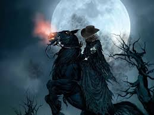

El Justo Juez de la Noche

En las zonas rurales de El Salvador, cuando la medianoche cae sobre los caminos de tierra y los cafetales, se escucha el galope rítmico de un caballo que no parece tocar el suelo. Es el Justo Juez de la Noche, un jinete de presencia imponente, vestido con ropajes oscuros de la época colonial, que monta un corcel negro de ojos como brasas. Algunos dicen que no tiene cabeza, mientras otros aseguran que su rostro está cubierto por una bruma impenetrable.
A diferencia de otros espectros, el Justo Juez no busca arrebatar vidas, sino imponer orden. Su objetivo son aquellos que andan en "malos pasos": trasnochadores, jugadores, o personas que han descuidado a su familia por los vicios. Al encontrarlos, el jinete detiene su marcha y, con una voz que suena como el crujir de madera antigua, les recrimina sus acciones, advirtiéndoles que la próxima vez no se limitará a hablar.
Se cuenta que tras el encuentro, las víctimas quedan en un estado de parálisis temporal y, al despertar, sienten un cambio profundo en su voluntad. El Justo Juez actúa como un centinela espiritual de la campiña salvadoreña, recordando a los vivos que incluso en la oscuridad más profunda, existe una justicia que observa y califica cada uno de sus actos antes de que sea demasiado tarde.